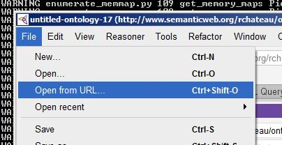
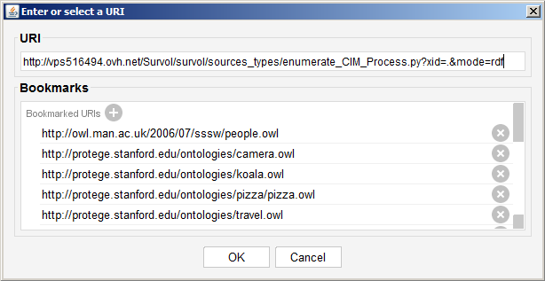
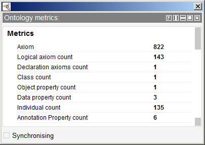
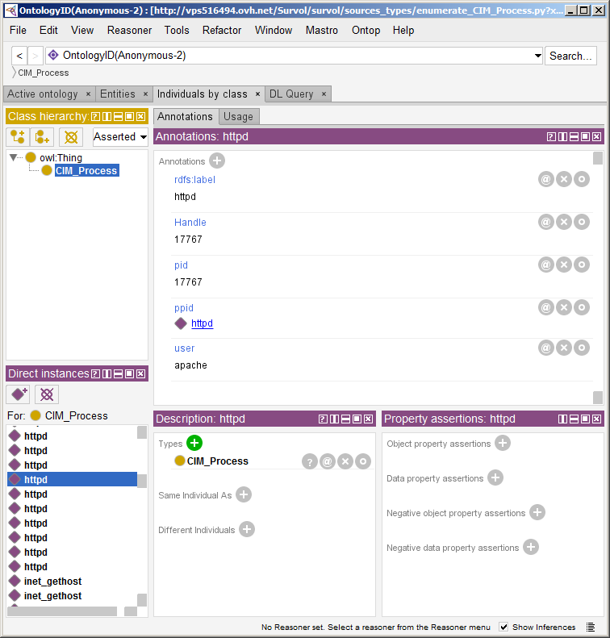

IMPORTING RDF DATA INTO PROTEGE
 Protégé is a free,
open source ontology editor and a knowledge management system.
Protégé provides a graphic user interface to define
ontologies. Protégé offers the features of importing
RDF ontologies from a text file or located on the Web by
specifying the http:// URL (address) of the ontology document.
This section demonstrates how this can be done with any Survol
RDF endpoint.
Protégé is a free,
open source ontology editor and a knowledge management system.
Protégé provides a graphic user interface to define
ontologies. Protégé offers the features of importing
RDF ontologies from a text file or located on the Web by
specifying the http:// URL (address) of the ontology document.
This section demonstrates how this can be done with any Survol
RDF endpoint.
The first step is to open the Protégé "File" menu for opening or saving ontologies. One of these options, "Open from URL" expects a HTTP link. Survol uses the RDFS ontology, as it is far more flexible than OWL and does not enforce any constraint on the Python providers scripts.
Provider scripts are specialized for a specific set of data describing the state, structure, architecture of a running machine. It can be the files in a specific directory, the TCP/IP sockets of a process, the DLL (shared library) linked to an executable etc... Survol comes with many different providers, but there is no limit on the number and types of provider scripts, and they are very easy to create.
When Protégé loads an RDF URL from Survol, it executes a provider script which dynamically creates a triple-store: This is therefore a data snapshot. Each time this URL is loaded, its content might be different.
The HTTP link to enter is an ontology URL defined by Survol. Any Survol URL can provide RDF triples: RDF is one of the many output files Survol can automatically convert its data too. A simple hint is to append to any URL, the CGI key-value pair: "&mode=rdf".
Survol comes with its own model describing software ( and also hardware objects). This model is based on CIM, which is a defacto standard that defines how managed elements in an IT environment are represented as a common set of objects and relationships between them. There is no standard mapping of CIM into a semantic web ontology. However, this translation is straightforward into RDFS: Both models manipulate classes and properties, with no added constraints. Survol does this translation on-the-fly, and represents only the CIM classes which are instantiated in the RDF triple-store. The reason for this restriction is the huge amount of CIM classes (Several hundreds) which are not needed if they bring no instance. On top of CIM classes, Survol models other objects which do not have an official CIM definition yet. It is very simple to create a new class in the Survol model, which is handy when adding objects of a niche software or not-yet-widely-known application. Survol is therefore well suited to describe an application or an IT system based on very heterogeneous software objects.
 One the data are loaded; they are visible in the "Ontology metrics" view which displays various for the axioms in the active ontology and its imports closure. These counts can be for example the combined logical and non-logical axiom count, the number of logical axioms, the number of classes, object properties, data properties and individuals in the signature of the imports closure of the active ontology.
Several scripts can be merged, possibly from different Survol agents. Their classes instances and properties will be transparently merged as if coming from a single URL.
The resources rdfs:seeAlso and rdfs:isDefinedBy can be plain HTTP URLS, but most of times, they will be RDF Survol URLs providing more RDF data. For example, if an object is present in the RDF triplestore, it will come with different resources pointing to provider scripts, each of them returning a triplestore related to the object.
After loading, all objects created by Survol
are now visible in Protégé with their properties: The
mandatory properties which are part of its URL, and any
predicate generated by the Survol script. All classes and
properties are defined in RDFS ontology.
